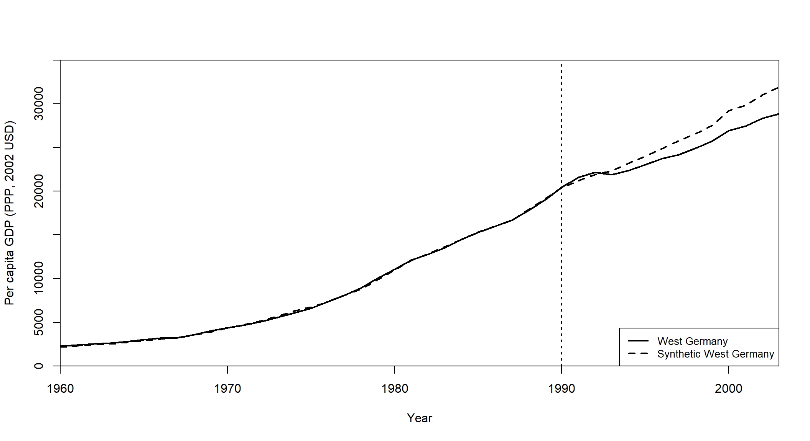
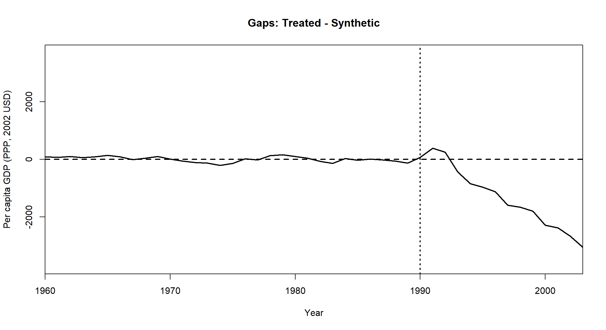
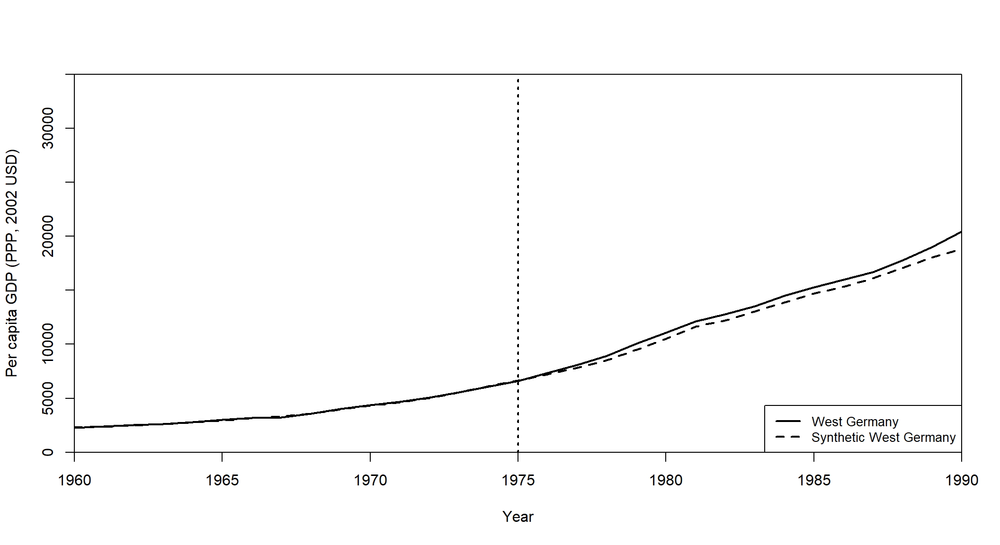
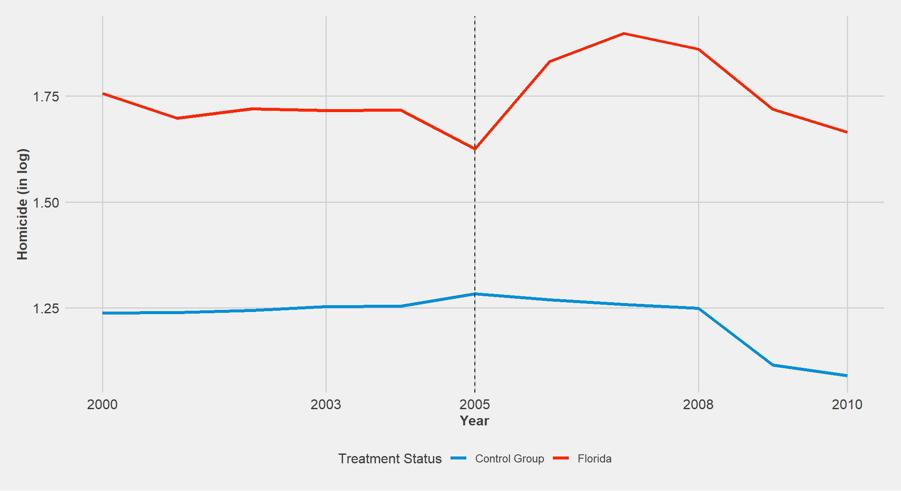

2 Inference Review
We just saw that the RAND HIE selected around 4,000 people to participate in the experiment. That sample was drawn at random from the eligible population in six areas. In other words, the researchers got a subset of the population to make inferences about the entire population. Of course, if they draw another sample to rerun the experiment, they would get different but similar results as long as the sample is large enough, so the Law of Large Numbers (LLN) kicks in. One important thing to have in mind is the quantification of the uncertainty that arises with sampling. In the following sections, we will discuss important topics about inference that you will frequently see through this semester. These notes are heavily based on Angrist and Pischke (2014) chapter 1.
2.1 Flipping coins
To simulate a fair coin toss you can use the sample() function:
sample(c("H", "T"), size=1)## [1] "H"If you want to flip a coin multiple times, increase size and use replace=TRUE:
set.seed(123)
exper1<-sample(c("H", "T"), size = 6, replace = TRUE)To see the results of the experiment, use table()
table(exper1)## exper1
## H T
## 4 2We expect that, as we play more and more, Heads and Tails would appear about the same proportion (50% of the time). Does that sound familiar?
exper2<-sample(c("H", "T"), size = 1000000, replace = TRUE)
table(exper2)## exper2
## H T
## 500302 4996982.2 Sample mean
Back to the health insurance example, we have the average health index of around 4,000 people, i.e., \(\bar{Y}=\dfrac{\sum_{i=1}^{4,000}Y_{i}}{4,000}\), but our target is the entire population. The population mean of a variable is called its mathematical expectation. For the expectation of a variable \(Y\), we write \(E(Y)\).
Properties of Expectations
Let \(X\) and \(Y\) be random variables, and \(a\) and \(b\) arbitrary constants. The expectation is a linear operator that satisfies the following equalities:
- \(E(a)=a\)
- \(E(aX)=aE(X)\)
- \(E(aX+b)=aE(X)+b\)
- \(E(aX+bY)=aE(X)+bE(Y)\)
- If \(X\) and \(Y\) are independent, then \(E(XY)=E(X)E(Y)\)
For a given population, there will be one \(E(Y_{i})=\mu_{Y}\) but many \(\bar{Y}=\frac{\sum_{i=1}^{n}Y_{i}}{n}\) depending on who ends up in the sample at hand. Since \(E(Y_{i})\) is fixed for a particular population, we call it a parameter.
Is \(\bar{Y}\) a good estimator of \(E(Y_{i})\)? Let us use the properties of the mathematical expectation:
\[E(\bar{Y})=E(\dfrac{\sum_{i=1}^{n}Y_{i}}{n})=\dfrac{\sum_{i=1}^{n}E(Y_{i})}{n}=E(Y_{i}) \]
Hence, the expectation of the sample average is equal to the population mean. In other words, \(\bar{Y}\) is an unbiased estimator of the population mean.
2.3 Measuring Variability
Another useful statistic is the variance. The sample variance of \(Y_{i}\) in a sample size \(n\) is defined as
\[S(Y_{i})=\dfrac{\sum_{i=1}^{n}(Y_{i}-\bar{Y})}{n} \]
The population variance is defined as
\[V(Y_{i})=E[\{Y_{i}-E(Y_{i})\}^{2}]\]
Just like \(E(Y_{i})\), \(V(Y_{i})\) is fixed for a given population - \(V(Y_{i})=\sigma_{Y}\). The square root of \(V(Y_{i})\) is called the standard deviation.
Properties of Variance
Let \(X\) and \(Y\) be random variables, and \(a\) and \(b\) arbitrary constants. The variance operator \(V\) has the following properties:
- \(V(a)=0\)
- \(V(aX)=a^{2}V(X)\)
- \(V(X+b)=V(X)\)
- \(V(aX+b)=a^{2}V(X)\)
- If \(X\) and \(Y\) are independent, then \(V(X+Y)=V(X)+V(Y)\)
Variance per se is an important descriptive statistic about the distribution of \(Y_{i}\). However, we would like to go beyond that and quantify the variance of the sample mean in repeated samples.
What is the variance of \(\bar{Y}\) (a.k.a sampling variance)?
\[V(\bar{Y})=V(\frac{\sum_{i=1}^{n}Y_{i}}{n})=\frac{\sum_{i=1}^{n}V(Y_{i})}{n^{2}}=\frac{n\sigma_{Y}^{2}}{n^{2}}=\frac{\sigma_{Y}^{2}}{n}\] The standard deviation of the sample average is called standard error and can be written as
\[SE(\bar{Y})=\frac{\sigma_{Y}}{\sqrt{n}}\]
As you can see, more data (\(\uparrow n\)) means less dispersion (\(\downarrow \frac{\sigma_{Y}}{n}\)). This is the Law of Large Numbers at work: as \(n \rightarrow \infty\), the sample average approaches the population mean, and sampling variance goes to zero.
Finally, we hardly know the value of the population parameters. In practice, we work with the estimated version. In the case of the standard error, we can replace \(\sigma_{Y}\) by \(S(Y_{i})\):
\[SE(\bar{Y})=\frac{S(Y_{i})}{\sqrt{n}}\]
2.4 Central Limit Theorem (CLT)
Let’s play dice! When you roll a fair die, you expect to get 1,2,3,4,5, and 6 with the same probability \(\frac{1}{6}\). Hence, the mathematical expectation of that process is:
\[E[X]=\frac{1}{6}1+\frac{1}{6}2+\frac{1}{6}3+\frac{1}{6}4+\frac{1}{6}5+\frac{1}{6}6=3.5\] According to the Law of Large Numbers, if you play long enough, the sample average will get close to 3.5. Now, let’s look at the histograms for each set of averages according to the sample size (number of rolls). We start rolling a dice two times, and we repeat this process 500 times. The resulting distribution is called “the sampling distribution of the sample mean.”
mean(sample(1:6, size=2, replace=TRUE ))## [1] 3hist(replicate(500,mean(sample(1:6, size=2, replace=TRUE ))), main=" ", xlab = "Average of 2 rolls")
Let’s roll a die 100 times and repeat the process again, plotting the histogram:
hist(replicate(500,mean(sample(1:6, size=100, replace=TRUE ))), main=" ", xlab = "Average of 100 rolls")
Does this distribution look familiar? The Central Limit Theorem states that, when the sample is sufficiently large, the distribution of the sample average is very close to a normal distribution, regardless of whether the random variable itself is normally distributed.
2.5 The t-Statistic and the CLT
Suppose the data at hand come from a distribution for which we believe the population mean \(E(Y_{i})\) is equal to \(\mu_{Y}\). This value constitutes a working hypothesis. A t-statistic for the sample mean under that hypothesis is constructed as:
\[t=\frac{\bar{Y}-\mu_{Y}}{\hat{SE}(\bar{Y})}\]
If \(E(Y_{i})=\mu_{Y}\), with a large enough sample, the test statistic \(t\) has a sampling distribution that is very close to the standard normal, regardless of the distribution of the data used to calculate \(t\).
For instance, suppose we measure health status with a dummy variable that takes one if healthy and 0 if sick. Also, assume that 20% of the population is sick. As you can see below, the distribution has two spikes: height .8 at the value one and height .2 at the value 0. The CLT tells us that, with enough data, the distribution of the t-stat is bell-shaped even though the distribution of the underlying data has only two values.
hist(sample(x = 0:1, size = 1000000, replace = TRUE, prob = c(0.2, 0.8)), main=" ", xlab = "Health Status")
To see that, let’s first calculate \(E(Y_{i})=0.8 \times 1 + 0.2 \times 0=0.8=\mu_{Y}\). From the population, we sample 10 and 100 values 100,000 times, calculate the respective t-stats \(\frac{\bar{Y}-0.8}{\hat{SE}(\bar{Y})}\) and plot the distribution of those values:
## 10 values
small<-replicate(100000,sample(x = 0:1, size = 10, replace = TRUE, prob = c(0.2, 0.8)))
tstat<-matrix(NA, nrow=100000, ncol=1)
for(i in 1:100000){
tstat[i,]<-(mean(small[,i])-.8)/sd(small[,i])*sqrt(10)
}
hist(tstat, main=" ", xlab="t-stat for the mean in a sample of size 10")
## 100 values
big<-replicate(100000,sample(x = 0:1, size = 100, replace = TRUE, prob = c(0.2, 0.8)))
tstat<-matrix(NA, nrow=100000, ncol=1)
for(i in 1:100000){
tstat[i,]<-(mean(big[,i])-.8)/sd(big[,i])*sqrt(100)
}
hist(tstat, main=" ", xlab="t-stat for the mean in a sample of size 100")
As the sample size increase, the fit to a normal distribution improves. With any standard normal variable, values larger than \(\pm2\) are implausible - they appear only about 5% of the time. Hence, we usually judge a t-stat greater than 2 in absolute value as too unlikely to be consistent with the null hypothesis used to construct it. In other words, we reject the null when t is larger than \(\pm2\).
2.6 Confidence Interval
The sample estimate of the population mean \(\bar{Y}\) is a point estimate. That number tells us nothing about precision (i.e., the magnitude of the estimate’s sampling error/standard error). We can incorporate the uncertainty associated with the estimate by constructing a set of all values of \(\mu_{Y}\) that are consistent with the data. The center of this interval is \(\bar{Y}\), and the larger \(\hat{SE}(\bar{Y})\), the wider the interval, the higher the uncertainty about where the true \(\mu_{Y}\) is located.
In repeated samples, we calculate the interval as follows:
\[\bar{Y}-2\times\hat{SE}(\bar{Y}), \bar{Y}+2\times\hat{SE}(\bar{Y})\] This interval should contain \(E(Y_{i})\) about 95% of the time. For instance, if we generate 100 samples and use \(\bar{Y}\) to construct intervals, we expect that 95 of these intervals will contain \(\mu_{Y}\).
2.7 Hypothesis Testing
As you noted, we are usually concerned about two sample averages (e.g., insured/uninsured individuals). Let’s go back to the RAND HIE example (download the data here). There you have multiple health insurance types but can compare the Catastrophic with the others (any insurance).
setwd("C:/Users/User/Desktop/474-Rlab/datasets")
rand_spend<-readRDS("rand_spend.RDS")
rand_spend$any_ins<-ifelse(rand_spend$plantype!="Catastrophic", "Any Insurance", "Catastrophic")In this lecture we performed a standard t-test to compare the outpatient expenses between those two groups:
t.test(out_inf~any_ins, data=rand_spend, alternative="two.sided", var.equal=TRUE)##
## Two Sample t-test
##
## data: out_inf by any_ins
## t = 9.9278, df = 20201, p-value < 2.2e-16
## alternative hypothesis: true difference in means between group Any Insurance and group Catastrophic is not equal to 0
## 95 percent confidence interval:
## 80.75058 120.48034
## sample estimates:
## mean in group Any Insurance mean in group Catastrophic
## 348.4137 247.7983The output shows a lot of stuff: t-stat, p-value, 95% confidence interval, etc. Let’s take a look at what we just did. We have sample estimates of population means (averages) of subjects in experimental treatment \(\bar{Y^{1}}\) and control groups \(\bar{Y^{0}}\). Next, we want to test whether health insurance has a causal effect on demand for health care (measured by consumer spending on health care). The null hypothesis is there is no effect whatsoever, in which case the two samples used to construct treatment and control averages come from the same population - \(\mu_{1}=\mu_{0}\). On the other hand, if there is an effect, the populations from which treatment and control observations are drawn are necessarily different. In particular, they would have different means: \(\mu_{1}\neq \mu_{0}\)
You can identify the null and alternative hypothesis as
\[\begin{array}{rcl} H_{o} & \mu_{1}=\mu_{0} \\ H_{a} & \mu_{1}\neq \mu_{0} \end{array}\]One can construct the respective t-stat using
\[t=\frac{\bar{Y}^{1}-\bar{Y}^{0}}{\hat{SE}(\bar{Y}^{1}-\bar{Y}^{0})}\]
where \(\hat{SE}(\bar{Y}^{1}-\bar{Y}^{0})=S(Y_{i})\sqrt{\frac{1}{n_{0}}+\frac{1}{n_{1}}}\), and \(S(Y_{i})\) is the pooled sample standard deviation1. To calculate \(t\) for outpatient expenses differences:
library(tidyverse)
### Get the averages
rand_spend%>%group_by(any_ins)%>%summarize(averages=mean(out_inf), sd=sd(out_inf), `sample size`=n())## # A tibble: 2 x 4
## any_ins averages sd `sample size`
## <chr> <dbl> <dbl> <int>
## 1 Any Insurance 348. 573. 16479
## 2 Catastrophic 248. 488. 3724### Get the pooled sample standard deviation
se<-sqrt(((16479-1)*573.3841^2+(3724-1)*487.6001^2)/(16479+3724-2))*sqrt(1/16479+1/3724)
se## [1] 10.13472Calculating the t-stat:
t=(348.4137-247.7983)/10.13472
t## [1] 9.927793which is the same as in the output of the t.test() function. The t-stat value exceeds the range ±2, and we can reject the null hypothesis with confidence: there is evidence of the causal effect of health insurance on health care spending. Notice that a large t-stat arises when the estimated effect of interest is large or when the associated standard error is small.
Can you build the 95% confidence interval associated with that difference in means?
References
The pooled standard deviation can be calculated as \(\sqrt{\frac{(n_{0}-1) \times SD_{0}^{2}+(n_{1}-1) \times SD_{1}^{2}}{n_{0}+n_{1}-2} }\)↩︎